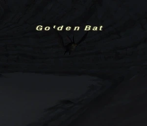

Level 75 reference · Zenith rules
|
Job: Notorious Monster |
 |

| Zone | Level | Drops | Steal | Spawns | Notes | ||||||
| Valkurm Dunes | 26-27 | 1 | A, L, H
| ||||||||
HP = Detects Low HP; M = Detects Magic; Sc = Follows by Scent; T(S) = True-sight; T(H) = True-hearing JA = Detects job abilities; WS = Detects weaponskills; Z(D) = Asleep in Daytime; Z(N) = Asleep at Nighttime | |||||||||||

Notes:
- Lottery spawn from Giant Bats in the tunnels at (C-6)-(C-7) and (B-8)
- Giant Bats respawn every 5 minutes
- Respawns every 1-2 hours
- PH is the Top Giant Bat on wide of the 2 Giant Bats above the Song Runes
Adapted from Eden Wiki: Golden Bat · Contributors and history · CC BY-SA 4.0. Revision 46817. Layout, links and optional background text adapted for Zenith.